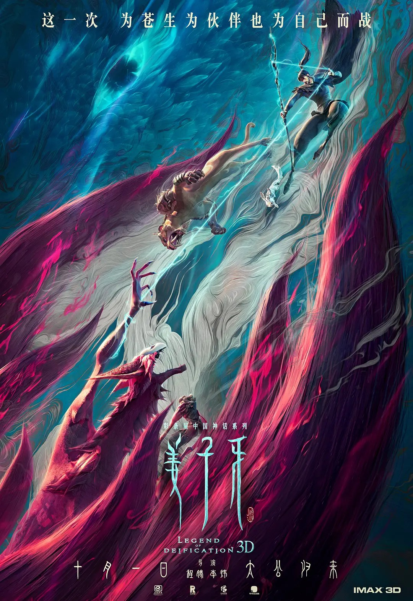
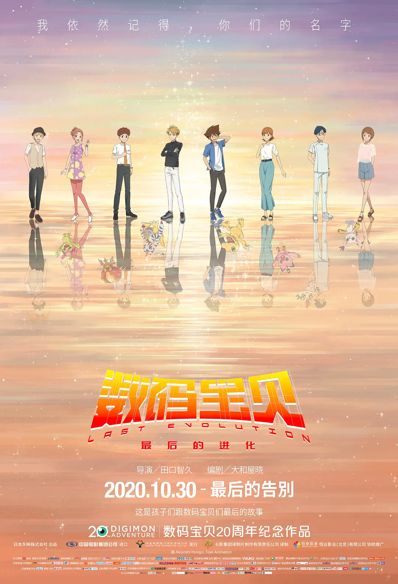
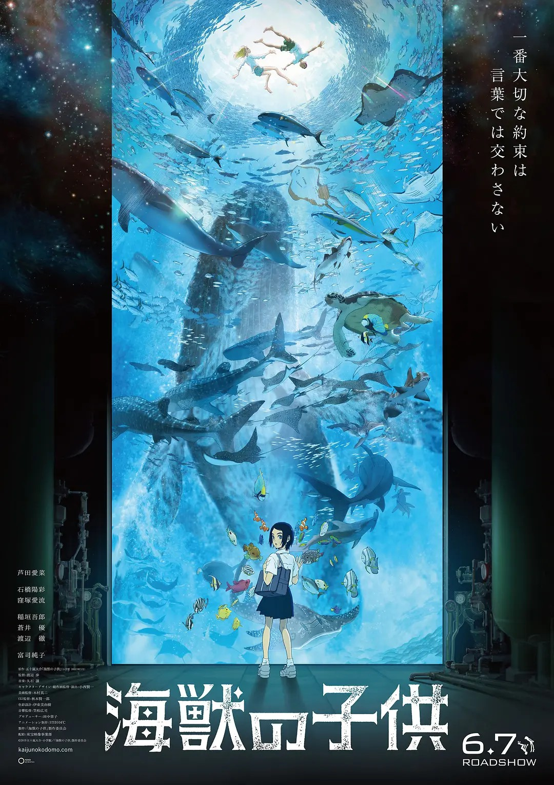
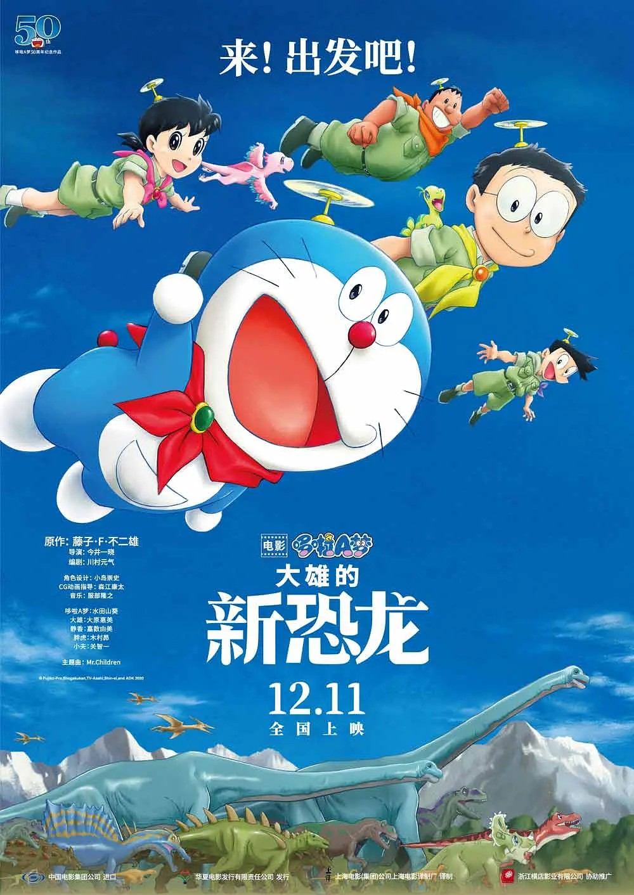

姜子牙

商朝末年，邪魅炽盛。九尾妖狐化身绝世美女魅惑商王，帝辛沉湎美色，狂暴倍增，饮酒作乐，屠杀黎民。一时间天怒人怨，静虚宫掌教世尊上承天命，拍出弟子姜子牙等众神仙助力周部落起义，最终推翻商周残暴统治。在此之后，众神归位，而九尾也被抓到静虚宫斩妖台，等候最后的发落。作为行刑者的姜子牙，在关键时刻遭到九尾魅惑，看到了令他内心大为波动的景象。虽然九尾被诛，但他也被世尊发配北海古战场反省修行。一晃数年，姜子牙仍在苦寒之地苦苦冥思。而就在某天，一名狐族女孩出现在北海，而她经与姜子牙当年在幻象中见到的女孩一模一样。为了追索真相，姜子牙不顾一切闯出北海禁地……
动画
| 电影名称 | 姜子牙 |
|---|---|
| 电影类型 | 奇幻 / 剧情 |
| 上映时间 | 2020-10-01 |
| 观看时间 | 2020-10-01 |
观看时间与地点中国陕西省西安市 卢米埃影城凯德广场店
评价一般。
同行PMY(泮)
デジモンアドベンチャー LAST EVOLUTION 絆 数码宝贝：最后的进化

2010年，曾经的小学生们已经步入大学，太一、阿和等人步上不同的人生道路（八神太一和石田大和将会成长为22岁），而就在此时，数码宝贝的研究者メノア(松冈茉优 配音)却告诉他们：“被选召的孩子们”长大成人后，数码宝贝也将随之消失…。预告中字幕表明这是“太一他们最后的故事” ，结尾则注明：献给所有和数码宝贝一起成长的“孩子”们，还有亚古兽注视着长大成人的太一的背影，“太一，你长大了呢”。
动画
| 电影名称 | デジモンアドベンチャー LAST EVOLUTION 絆 数码宝贝：最后的进化 |
|---|---|
| 电影类型 | 奇幻 / 冒险 |
| 上映时间 | 2020-02-21 |
| 观看时间 | 2020-11-01 |
观看时间与地点中国陕西省西安市 博纳国际影城朱雀店
评价一般。
同行PMY(泮)
海獣の子供 海兽之子

偶遇到神秘少年“海”（石桥阳彩配）和“空”（浦上晟周配）的这个炎炎夏天，是琉花（芦田爱菜配）暑期的正式开始。天真无邪的“海”，看透一切的“空”，海洋馆里发光的鱼群，对琉花来说都像是一场浪漫的约定如期而至。
动画
| 电影名称 | 海獣の子供 海兽之子 |
|---|---|
| 电影类型 | 奇幻 / 冒险 |
| 上映时间 | 2019-06-07 |
| 观看时间 | 2020-11-20 |
观看时间与地点中国陕西省西安市 UME影城小寨店
评价意识流，很惊艳。
同行PMY(泮)
除暴
20世纪90年代，南方小城，狠辣无情的悍匪张隼（吴彦祖 饰）带领数名亡命之徒成立“老鹰帮”。张隼自恃胆大心黑，狡猾多段，因此带领手下出入多省的商场和银行，大摇大摆实施抢劫，如入无人之境。甚至在抢劫过后不急于逃离现场，而是在附近观察警方乱作一团的狼狈样。张隼的嚣张令警方大为光火却无计可施。刑警队长钟诚曾与张隼有过一次失败的交手，侥幸逃得一命的他从此死死咬住这个狂暴的对手，警匪双方上演了一系列惊险刺激的攻防战。蛮荒战场，子弹横飞，正义与邪恶终将迎来最后的对决……
真人
| 电影名称 | 除暴 |
|---|---|
| 电影类型 | 动作 / 犯罪 |
| 上映时间 | 2020-11-20 |
| 观看时间 | 2020-12-02 |
观看时间与地点中国陕西省西安市 UME影城小寨店
评价一般。
Monster Hunter 怪物猎人
在执行一项充满危险的任务以追踪一队失踪的士兵时，坚韧不拔的美国陆军游骑兵上尉娜塔莉·阿尔忒弥斯和她的精英战友发现自己被传送到另一个宇宙。在那里，阿尔忒弥斯上尉和她的小队被困在一个充满强大对手和地下沙栖野兽的贫瘠沙漠世界中，他们第一次震惊地发现，他们原本具有破坏性的军事武器现在完全不足以击倒敌人。但是，出乎意料的是，在他们为生存而进行的绝望战斗中，团队偶然发现了一位神秘的当地猎人，他卓越的战斗技巧使他能够领先于强大的生物一步。有没有办法逃离监狱领域？最重要的是，成为一名无所畏惧的怪物猎人需要什么。
真人
| 电影名称 | Monster Hunter 怪物猎人 |
|---|---|
| 电影类型 | 奇幻 / 动作 |
| 上映时间 | 2020-09-04 |
| 观看时间 | 2020-12-04 |
观看时间与地点中国陕西省西安市 UME影城小寨店
评价一般。
同行PMY(泮)
映画ドラえもん のび太の新恐竜 哆啦A梦：大雄的新恐龙

阳光明媚的日子里，大雄、静香、胖虎和小夫一起去参加恐龙博物展。由于被胖虎和小夫嘲笑，大雄情急之下又再次胡说八道，发誓要找到真正的恐龙给他们看。在儿童考古体验现场，大雄找到一枚蛋状石头，于是他将其当作恐龙蛋化石，宝贝一样带回家中，拜托哆啦A梦用时间包袱皮孵化。令人意想不到的是，经过一天一夜孵化，那枚彩色蛋中居然真的钻出两只从没见过的小恐龙。这两只被命名为小咪和小啾的小家伙给大雄带来无限乐趣，可是在现代社会养恐龙又怎会是一件容易的事。万般无奈之下，好朋友们结伴坐上时光机，把小恐龙们带回白垩纪时代，而他们的大冒险就此展开……本片是《哆啦A梦》漫画连载50周年纪念作品，同时也是《哆啦A梦》系列电影的第40部作品。
动画
| 电影名称 | 映画ドラえもん のび太の新恐竜 哆啦A梦：大雄的新恐龙 |
|---|---|
| 电影类型 | 奇幻 / 冒险 |
| 上映时间 | 2020-08-07 |
| 观看时间 | 2020-12-06 |
观看时间与地点中国陕西省西安市 UME影城小寨店
评价一般。
同行PMY(泮)
拆弹专家2
香港某处发生爆炸案，前拆弹专家潘乘风（刘德华 饰）因昏迷于现场，被警方怀疑牵涉其中。苏醒后的潘乘风只能一边逃亡一边查明真相，然而，他的好友董卓文（刘青云 饰）和他的前女友庞玲（倪妮 饰）却给他讲述了两段截然不同的经历。有计划的爆炸案接二连三发生，真相却越来越扑朔迷离……
真人
| 电影名称 | 拆弹专家2 |
|---|---|
| 电影类型 | 动作 / 犯罪 |
| 上映时间 | 2020-12-24 |
| 观看时间 | 2020-12-25 |
观看时间与地点中国陕西省西安市 UME影城小寨店
评价还不错。
同行PMY(泮)
温暖的抱抱
鲍抱（常远 饰）是一名普通的钢琴教师，许是童年的影响，导致现在的他有着十分偏执的洁癖，他的生活仿佛被卡尺精确测量规定过一样，一丝不苟，毫厘不差，却令他倍感窒息，以至于试图结束自己的生命。而就在这个紧要关头，开朗乐观的宋温暖（李沁 饰）闯入了鲍抱的人生。温暖灵动可爱，是一个颇有才华的音乐创作人。但是此前曾被恶德男友（乔杉 饰）利用压榨，几乎沦为了创作机器。就这样，两个性格和背景完全迥异的年轻人，意外走到了一起，他们多姿多彩而又令人捧腹的故事由此展开……影片根据韩国电影《计划男》改编。
真人
| 电影名称 | 温暖的抱抱 |
|---|---|
| 电影类型 | 喜剧 |
| 上映时间 | 2020-12-31 |
| 观看时间 | 2020-12-31 |
观看时间与地点中国河北省石家庄市 网尚魔杰电竞影院万达店
评价一般。
同行CJ(崔)